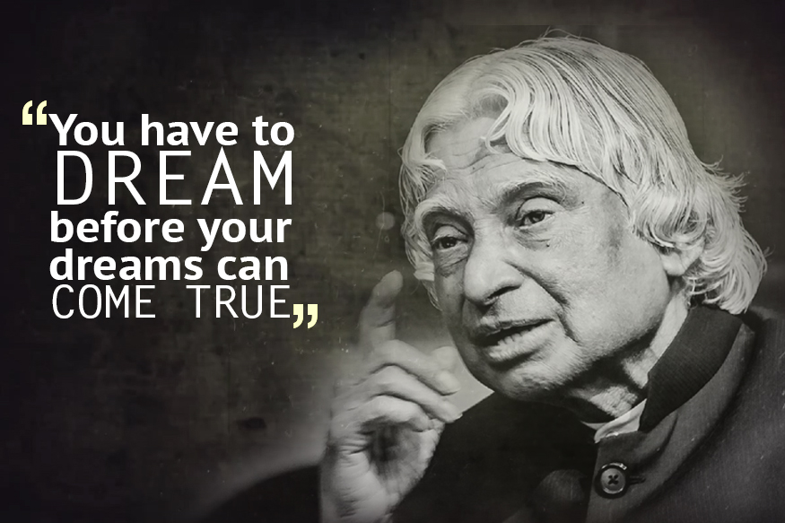

AVUL PAKIR JAINULABDEEN ABDUL KALAM

IF YOU WANT TO SHINE LIKE THE SUN FIRST BURN LIKE THE SUN
-APJ Abdul Kalam
EARLY LIFE AND EDUCATION
Born on 15 October 1931 to a Tamil Muslim family in the pilgrimage centre of Rameswaram on Pamban Island.
Father Jainulabdeen was a boat owner and imam of a local mosque and mother Ashiamma was a housewife.
Kalam had average grades but was a bright and hardworking student who had a strong desire to learn. He spent hours on his studies, especially mathematics.
CAREER AS A SCIENTIST
After graduating from the Madras Institute of Technology in 1960, Kalam joined the Aeronautical Development Establishment of the Defence Research and Development Organisation (by Press Information Bureau, Government of India) as a scientist after becoming a member of the Defence Research and Development Service (DRDS).
n 1969, Kalam was transferred to the Indian Space Research Organisation (ISRO) where he was the project director of India's first Satellite Launch Vehicle (SLV-III) which successfully deployed the Rohini satellite in near-earth orbit in July 1980.
Between the 1970s and 1990s, Kalam made an effort to develop the Polar Satellite Launch Vehicle (PSLV) and SLV-III projects, both of which proved to be successful.
Kalam played a major part in developing many missiles under the mission including Agni, an intermediate range ballistic missile and Prithvi, the tactical surface-to-surface missile.
In 1998, along with cardiologist Soma Raju, Kalam developed a low cost coronary stent, named the "Kalam-Raju Stent".In 2012, the duo designed a rugged tablet computer for health care in rural areas, which was named the "Kalam-Raju Tablet".
PRESIDENCY
Kalam served as the 11th President of India, succeeding K. R. Narayanan. He won the 2002 presidential election with an electoral vote of 922,884, surpassing the 107,366 votes won by Lakshmi Sahgal.
On 18 June, Kalam filed his nomination papers in the Indian Parliament, accompanied by Vajpayee and his senior Cabinet colleagues.
During his term as president, he was affectionately known as the People's President,saying that signing the Office of Profit Bill was the toughest decision he had taken during his tenure.
On 18 June 2012, Kalam declined to contest the 2012 presidential poll. He said of his decision not to do so:Many, many citizens have also expressed the same wish. It only reflects their love and affection for me and the aspiration of the people. I am really overwhelmed by this support. This being their wish, I respect it. I want to thank them for the trust they have in me.
AWARDS AND HONOURS
Kalam received 7 honorary doctorates from 40 universities.
The Government of India honoured him with the Padma Bhushan in 1981 and the Padma Vibhushan in 1990 for his work with ISRO and DRDO and his role as a scientific advisor to the Government.
In 1997, Kalam received India's highest civilian honour, the Bharat Ratna, for his contribution to the scientific research and modernisation of defence technology in India.
In 2013, he was the recipient of the Von Braun Award from the National Space Society "to recognize excellence in the management and leadership of a space-related project".
Got inspired ? Click here to know more.